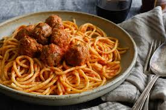

Ingredients
- 1 lb. Ground Beef
- 1 Small Onion (finely diced)
- 2 Eggs
- 1/2 Cup Parmesan Cheese (grated)
- 1/2 Cup Bread Crumbs
- Salt and Pepper (to taste)
- 3 Cups Marinara Sauce (1 jar)
- 16 oz. Spaghetti
- Fresh Chopped Parsley and Extra Parmesan for Serving (optional)
Instructions
- Fill a large pot 3/4 of the way full with water and boil.
- Pour marinara sauce into a deep skillet or pot.
- Combine ground beef, onion, eggs, parmesan cheese, bread crumbs, 2 teaspoons of salt and pepper in a bowl with hands.
- Form into balls no bigger than 1-inch in diameter and add the meatballs to the marinara sauce.
- Heat marinara sauce and meatballs over medium heat for 20 minutes, or until meatballs are cooked.
- Once water is boiling add spaghetti to the pot and cook till aldente
- Serve meatballs and sauce over cooked spaghetti, top with parsley and parmesan cheese